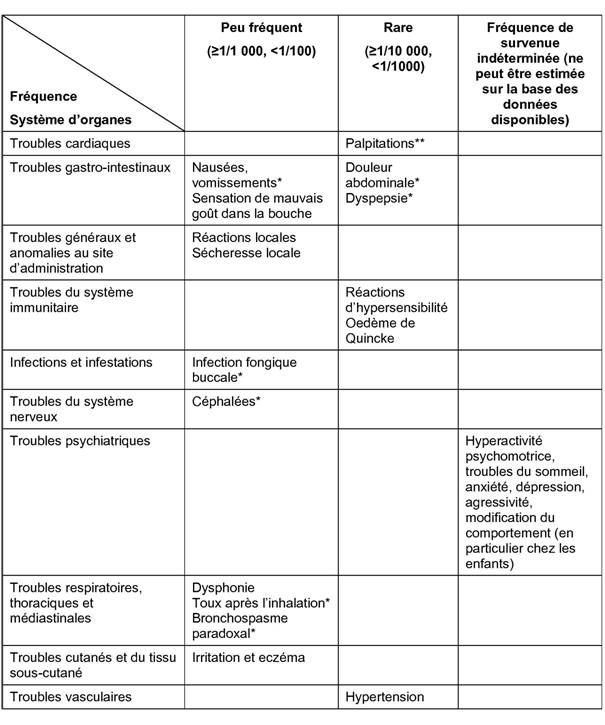

RÉSUMÉ DES CARACTÉRISTIQUES DU PRODUIT
ANSM - Mis à jour le : 31/03/2014
ALVESCO 40 microgrammes/dose, solution pour inhalation en flacon pressurisé
2. COMPOSITION QUALITATIVE ET QUANTITATIVE
Ciclésonide ..................................................................................................................................... 0,05 mg
Pour une dose mesurée.
La dose délivrée au travers de l'embout buccal est de 40 microgrammes de ciclésonide.
Pour la liste complète des excipients, voir rubrique 6.1.
Solution pour inhalation en flacon pressurisé.
Solution limpide et incolore.
4.1. Indications thérapeutiques
Traitement continu de l'asthme persistant chez l'adulte et l'adolescent (12 ans et plus).
4.2. Posologie et mode d'administration
Voie inhalée uniquement.
Posologie chez les adultes et les adolescents:
La dose recommandée d'Alvesco est de 160 microgrammes une fois par jour, qui permet un contrôle de l'asthme chez la majorité des patients. Néanmoins, dans l'asthme sévère, une étude sur 12 semaines a montré une réduction de la fréquence des exacerbations avec une dose de 640 microgrammes par jour (320 microgrammes 2 fois par jour) mais sans que soit mis en évidence une amélioration sur la fonction pulmonaire (voir rubrique 5.1). Chez certains patients, une dose réduite jusqu'à 80 microgrammes une fois par jour peut suffire pour le traitement d'entretien.
La prise d'Alvesco se fera préférentiellement le soir mais elle est également possible le matin en fonction du cas clinique laissé à l'appréciation du médecin.
Lorsque l'asthme est contrôlé, il convient d'adapter la posologie à la dose minimale efficace assurant le contrôle des symptômes de l'asthme.
Les patients présentant un asthme sévère sont particulièrement sujets à la survenue de crise d'asthme aiguë. Ils devront être régulièrement suivis sur le plan clinique avec éventuellement une surveillance à l'aide d'explorations fonctionnelles respiratoires si besoin. L'augmentation de la consommation de bronchodilatateurs à action rapide pour soulager les symptômes d'asthme doit faire évoquer une déstabilisation de l'asthme. Les patients devront être informés qu'une consultation médicale est nécessaire s'ils n'obtiennent plus une amélioration suffisante de leur symptômes avec les bronchodilatateurs d'action rapide qu'ils utilisent habituellement ou s'ils doivent en augmenter la consommation quotidienne. Il conviendra alors de réévaluer la conduite thérapeutique et une augmentation du traitement anti-inflammatoire devra être envisagée (exemples: augmentation de la dose d'Alvesco pendant une durée limitée (voir rubrique 5.1) ou cure de corticothérapie orale). En cas de survenue d'exacerbations sévères, le traitement adapté conventionnel doit être instauré.
En cas de difficulté de synchronisation main/poumon pour utiliser le dispositif, Alvesco peut être utiliser avec la chambre d'inhalation AeroChamber Plus.
L'utilisation d'Alvesco n'est pas recommandée chez les enfants de moins de 12 ans, en raison de l'insuffisance de données d'efficacité et de sécurité.
Patients âgés ou atteints d'insuffisance hépatique ou rénale:
Il n'est pas nécessaire d'ajuster la posologie chez les patients âgés ou en cas d'insuffisance hépatique ou rénale.
Instructions d'emploi/de manipulation:
Réservé à l'utilisation par inhalation.
Il convient d'expliquer au patient comment utiliser correctement l'inhalateur.
Lors de la première utilisation du dispositif ou s'il n'a pas été utilisé depuis plus d'une semaine, le dispositif sera amorcé en le déclenchant préalablement dans le vide. Il est inutile d'agiter le flacon avant l'utilisation car le produit se présente sous forme de solution.
L'inhalation devra être réalisée, de préférence, en position assise ou debout en tenant l'inhalateur en position verticale, le pouce étant placé sur la base de l'inhalateur, sous l'embout buccal.
Retirer le capuchon de l'embout buccal, placer l'inhalateur dans la bouche en enserrant l'embout buccal entre les lèvres et inspirer lentement et profondément tout en appuyant sur la partie supérieure de l'inhalateur.
Retirer l'inhalateur de la bouche en retenant sa respiration au minimum pendant 10 secondes ou jusqu'à ce que se manifeste une gêne respiratoire. Ne pas expirer dans le dispositif.
Puis, expirer lentement hors du dispositif et remettre le capuchon de l'embout buccal.
L'embout buccal doit être nettoyé avec du papier absorbant ou un chiffon sec une fois par semaine.
L'inhalateur ne doit ni être rincé à l'eau, ni plongé dans l'eau.
Pour des instructions détaillées, se référer à la notice dans la boîte.
Hypersensibilité au ciclésonide ou à l'un des excipients.
4.4. Mises en garde spéciales et précautions d'emploi
Comme tous les corticoïdes inhalés, Alvesco doit être utilisé avec prudence chez les patients atteints de tuberculose pulmonaire active ou quiescente et d'infections fongiques, virales ou bactériennes et ne sera utilisé que si ces infections sont correctement traitées.
Alvesco est un corticoïde par voie inhalée et il ne constitue donc pas le traitement adapté de l'état de mal asthmatique ou des autres épisodes asthmatiques aigus qui requièrent un traitement intensif.
Il n'est pas destiné à être utilisé pour apporter un soulagement immédiat des symptômes aigus, situations au cours desquelles il convient d'avoir recours à un bronchodilatateur d'action rapide par voie inhalée. Il convient d'avertir les patients qu'ils doivent toujours garder sur eux à disposition leur médicament bronchodilatateur à action rapide pour traiter en urgence des symptômes d'apparition aiguë.
Les corticoïdes inhalés peuvent provoquer des effets systémiques, notamment en cas d'utilisation prolongée et à fortes doses. Ces effets indésirables sont néanmoins moins fréquents qu'avec les corticoïdes oraux. Ils consistent notamment en: inhibition de la fonction surrénalienne, retard de croissance chez les enfants et adolescents, diminution de la densité minérale osseuse, cataracte et glaucome, et plus rarement, troubles psychologiques ou comportementaux comprenant hyperactivité psychomotrice, troubles du sommeil, anxiété, dépression, ou agressivité (en particulier chez les enfants). Il importe donc de veiller à toujours rechercher la dose minimale du corticoïde inhalé permettant le maintien d'un contrôle efficace de l'asthme.
La taille des enfants et adolescents traités de façon prolongée par corticoïdes inhalés devra être surveillée régulièrement. En cas de ralentissement de la croissance, le traitement sera réévalué afin d'envisager une réduction de la corticothérapie inhalée jusqu'à une dose minimale permettant le maintien d'un contrôle efficace de l'asthme. L'avis d'un pneumo-pédiatre est recommandé.
Il n'y a pas de données disponibles concernant l'insuffisance hépatique sévère. Dans ce cas, une augmentation de l'exposition systémique est attendue, et la survenue d'effets indésirables doit être attentivement surveillée dans ces situations.
L'effet obtenu par l'utilisation de ciclésonide par voie inhalée conduit généralement à diminuer le besoin en corticoïdes oraux. Toutefois, la mise en route d'une corticothérapie par voie inhalée ne constitue pas une thérapie substitutive en cas d'inhibition de la fonction surrénalienne induite par une corticothérapie orale préalable. Le risque d'insuffisance surrénalienne aiguë ou subaiguë liée à l'inhibition des glandes surrénales persiste un certain temps après le relais par corticothérapie par voie inhalée. Un avis spécialisé peut être requis afin d'évaluer l'intensité du retentissement sur la fonction surrénalienne et la prise en charge thérapeutique adaptée. La possibilité d'insuffisance surrénalienne doit être évoquée dans les situations d'urgence (médicale ou chirurgicale) ou susceptible d'induire un stress; une corticothérapie de substitution adaptée peut être nécessaire.
Relais d'une corticothérapie orale:
Chez les patients corticodépendants, l'effet inhibiteur sur les fonctions corticosurrénaliennes induit par la corticothérapie orale peut persister de façon prolongée, ce qui doit conduire à la plus grande prudence et à une surveillance médicale attentive. Les fonctions corticosurrénaliennes peuvent être inhibées lors des traitements par corticoïdes oraux à fortes doses ou au long cours. Lors du transfert à la corticothérapie inhalée, la réduction de la corticothérapie orale ne doit être envisagée que progressivement et le sevrage devra être effectué sous surveillance médicale attentive (à la recherche de l'apparition de signes d'insuffisance corticosurrénalienne aiguë ou subaiguë).
Après environ une semaine, les doses de corticoïdes oraux seront diminuées progressivement par palier de 1 mg équivalent de prednisolone par semaine. Il est possible, si la dose quotidienne préalable dépasse 10 mg équivalent de prednisolone, d'envisager avec précaution une réduction hebdomadaire de la dose plus importante.
Certains patients peuvent ressentir une sensation de malaise atypique au cours de la période de sevrage, alors que leur état respiratoire reste stable ou même s'améliore. Sauf si des signes objectifs d'insuffisance surrénale sont objectivés, les patients devront être encouragés à poursuivre la corticothérapie inhalée et à poursuivre le sevrage de la corticothérapie orale.
Les patients recevant un traitement inhalé en relais d'une corticothérapie orale et chez qui la fonction corticosurrénalienne reste perturbée devront porter sur eux une carte indiquant qu'ils peuvent nécessiter une supplémentation par corticothérapie systémique s'ils sont en situations de stress telles que l'aggravation d'une crise d'asthme, une infection bronchopulmonaire, une maladie intercurrente sévère, ou une intervention chirurgicale, un traumatisme, etc.
Le remplacement de la corticothérapie systémique par un traitement par voie inhalée peut démasquer les symptômes d'une maladie allergique telle que la rhinite allergique ou l'eczéma, préalablement contrôlés par la corticothérapie systémique.
La survenue d'un bronchospasme paradoxal avec augmentation des sifflements respiratoires ou autres symptômes de bronchoconstriction immédiatement après l'inhalation du médicament nécessite le recours à un traitement par un bronchodilatateur inhalé de courte durée d'action qui doit apporter un soulagement rapide des symptômes. Dans ces cas, la conduite thérapeutique devra être réévaluée afin d'établir le bien fondé à maintenir ou non le traitement par Alvesco. Il existe une certaine corrélation entre la réactivité bronchique et la sévérité de l'asthme sous jacent qu'il convient de garder en mémoire (voir rubrique 4.8).
La technique d'utilisation de l'inhalateur par les patients devra régulièrement être contrôlée afin de s'assurer de la bonne synchronisation main/poumon pour une délivrance optimale du produit jusqu'au poumon.
Un traitement concomitant par le kétoconazole ou d'autres inhibiteurs puissants du CYP3A4 doit être évité sauf si le bénéfice attendu l'emporte sur l'augmentation du risque d'effets indésirables systémiques liés à la corticothérapie (voir rubrique 4.5).
4.5. Interactions avec d'autres médicaments et autres formes d'interactions
Les études menées in vitro montrent que le CYP3A4 est la principale enzyme intervenant dans le métabolisme du métabolite actif du ciclésonide M1 chez l'homme.
Une étude de l'interaction médicamenteuse entre ciclésonide et kétoconazole, un puissant inhibiteur de la CYP3A4, a montré, à l'état d'équilibre, une augmentation d'un facteur d'environ 3,5 de l'exposition systémique du métabolite actif M1, sans modification de l'exposition systémique du ciclésonide. L'administration concomitante d'inhibiteurs puissants du CYP3A4 (tels que kétoconazole, itraconazole, ritonavir ou nelfinavir) doit donc être évitée sauf si le bénéfice attendu l'emporte sur l'augmentation du risque d'effets indésirables systémiques de la corticothérapie.
Il n'existe pas de données fiables chez les femmes enceintes.
Des études ont montré que les glucocorticoïdes induisent des malformations chez l'animal (voir rubrique 5.3). Ces observations ne sont probablement pas pertinentes concernant les doses thérapeutiques par voie inhalée préconisées en clinique humaine.
Comme avec les autres glucocorticoïdes, le ciclésonide ne doit être utilisé pendant la grossesse que si le bénéfice maternel attendu justifie les risques potentiels pour le fœtus. Le traitement devra être administré à la dose minimale assurant un contrôle efficace de l'asthme.
Une surveillance attentive des nouveau-nés de mères traitées par corticoïde pendant la grossesse est préconisée à la recherche de signe d'une éventuelle insuffisance corticosurrénale.
L'excrétion du ciclésonide dans le lait humain n'est pas connue. L'administration de ciclésonide à des femmes qui allaitent ne doit être envisagée que si le bénéfice maternel attendu l'emporte sur les risques éventuels pour l'enfant.
4.7. Effets sur l'aptitude à conduire des véhicules et à utiliser des machines
Le ciclésonide inhalé n'a pas d'effet significatif sur l'aptitude à conduire des véhicules et à utiliser des machines.
Lors des essais cliniques, des effets indésirables ont été rapportés chez environ 5 % des patients traités par Alvesco à des doses allant de 40 à 1 280 microgrammes par jour. Dans la majorité des cas, ils ont été d'intensité légère et n'ont pas nécessité l'arrêt du traitement par Alvesco.

* Fréquence égale ou inférieure versus placebo.
** les palpitations au cours des essais cliniques ont été observées pour des cas d'administration concomitante avec des médicaments ayant des effets cardiaques reconnus (théophylline ou salbutamol).
Un bronchospasme peut survenir immédiatement après l'inhalation. Il s'agit d'une réaction aiguë non spécifique, qui est possible avec tous les médicaments inhalés, et qui peut être lié au principe actif, aux excipients ou au refroidissement lié à l'aérosolisation des produits en aérosols doseurs pressurisés. Dans les cas sévères, le traitement par Alvesco doit être interrompu.
Des effets systémiques peuvent survenir avec les corticoïdes inhalés, en particulier avec les traitements de durée prolongée et à doses fortes. Les éventuels effets systémiques sont les suivants: syndrome de Cushing, symptômes cushingoïdes, inhibition des fonctions surrénaliennes, retard de croissance chez l'enfant et l'adolescent, diminution de la densité minérale osseuse, cataracte et glaucome (voir aussi rubrique 4.4).
Aigu:
Une dose de 2880 microgrammes de ciclésonide administrée par voie inhalée a été bien tolérée chez des volontaires sains.
Le risque d'effets toxiques aigus après un surdosage en ciclésonide par inhalation est faible. Aucun traitement spécifique n'est nécessaire après un surdosage aigu.
Chronique:
Il n'a pas été observé de signe clinique d'insuffisance corticosurrénalienne après l'administration prolongée de 1280 microgrammes de ciclésonide par voie inhalée. Cependant, le risque de freination surrénalienne ne peut être exclu en cas d'utilisation prolongée à des doses supérieures à la dose préconisée en thérapeutique humaine. Une surveillance des fonctions surrénaliennes peut s'avérer nécessaire.
5. PROPRIETES PHARMACOLOGIQUES
5.1. Propriétés pharmacodynamiques
Classe pharmacothérapeutique: AUTRES MEDICAMENTS POUR LES SYNDROMES OBSTRUCTIFS DES VOIES AERIENNES PAR INHALATION, GLUCOCORTICOIDES, Code ATC: R03BA08.
Le ciclésonide a une faible affinité pour les récepteurs aux glucocorticoïdes. Après inhalation orale, le ciclésonide subit un métabolisme enzymatique dans les poumons. Son principal métabolite, le C21-déméthylpropionyl-ciclésonide, exerçant un effet anti-inflammatoire important est considéré comme le métabolite actif.
Dans 4 essais cliniques réalisés avec tests de provocation au monophosphate d'adénosine une réduction de l'hyperréactivité bronchique a été retrouvée après inhalation de ciclésonide, l'effet maximal observé étant retrouvé à la dose de 640 microgrammes. Dans un autre essai, une diminution significative des réactions précoces et tardives après provocation allergénique par voie inhalée était observée après un traitement préalable de 7 jours par le ciclésonide. La quantité de cellules inflammatoires (nombre total d'éosinophiles) et les médiateurs de l'inflammation mesurés dans l'expectoration induite étaient moins augmentés.
Une étude contrôlée contre placebo a permis de comparer l'aire sous courbe (ASC) des concentrations plasmatiques en cortisol mesurées sur 24 heures chez 26 sujets asthmatiques adultes après 7 jours de traitement. Comparativement au placebo, le traitement par 320, 640 et 1280 microgrammes par jour de ciclésonide n'a pas provoqué de réduction significative de la cortisolémie moyenne sur 24 heures (ASC (0-24)/24 heures), et il n'a pas été observé de retentissement dose-dépendant.
Dans un essai clinique portant sur 164 asthmatiques adultes des deux sexes, le ciclésonide a été administré à des doses de 320 ou 640 microgrammes par jour pendant 12 semaines. Après stimulation par 1 et 250 microgrammes de Synacthène, il n'a pas été mis en évidence de différence significative de la cortisolémie par rapport au placebo.
Lors d'essais de 12 semaines, en double insu et contrôlés contre placebo, menés chez des adultes et adolescents, le traitement par le ciclésonide a amélioré la fonction respiratoire, évaluée par le VEMS et le débit expiratoire de pointe, a amélioré le contrôle des symptômes d'asthme et a diminué la consommation en bronchodilatateurs bêta-2 agonistes par voie inhalée.
Dans une étude de 12 semaines chez 680 patients atteints d'asthme sévère et précédemment traités par 500 - 1000 microgrammes par jour de propionate de fluticasone ou équivalent, respectivement 87,3 % et 93,3 % des patients recevant 160 ou 640 microgrammes de ciclésonide n'ont pas eu d'exacerbations. Au terme de la période d'étude de 12 semaines, une différence statistiquement significative entre les groupes traités par 160 et 640 microgrammes par jour de ciclésonide a été observée pour ce qui est de la survenue des crises d'asthme après le premier jour de l'étude: 43 patients/339 (12,7 %) dans le groupe de patients traités par 160 microgrammes par jour contre 23 patients/341 (6,7 %) dans le groupe de sujets traités par 640 microgrammes par jour (rapport de risque: 0,526; p = 0,0134). Au bout de 12 semaines, les valeurs du VEMS étaient comparables avec les deux doses de ciclésonide. Des événements indésirables imputables au traitement ont été constatés chez respectivement 3,8 % et 5 % des patients traités par 160 ou 640 microgrammes/jour. Aucune étude clinique n'a été conduite pour comparer entre elles les doses quotidiennes de 160 microgrammes, 320 microgrammes et 640 microgrammes chez des patients atteints d'asthme sévère.
5.2. Propriétés pharmacocinétiques
Le ciclésonide se présente sous forme d'une solution libérée sous forme d'aérosol avec un gaz propulseur (HFA-134a) et de l'éthanol. Il existe une relation linéaire entre les différentes doses délivrées, le dosage unitaire par bouffée et l'exposition systémique.
Absorption:
Des études menées après administration orale et intraveineuse de ciclésonide radiomarqué montrent que l'absorption orale est incomplète (24,5 %). La biodisponibilité orale du ciclésonide et du métabolite actif est négligeable (<0,5 % pour le ciclésonide, <1 % pour le métabolite). Les résultats d'une étude menée par scintigraphie gamma montrent un dépôt pulmonaire de 52 % chez des sujets sains. La biodisponibilité systémique du métabolite actif est >50 % avec l'aérosol-doseur de ciclésonide. La biodisponibilité orale du métabolite actif étant <1 %, la fraction déglutie du ciclésonide inhalé ne contribue pas à l'absorption systémique.
Distribution:
Après administration intraveineuse chez des sujets sains, le produit se distribue rapidement dans l'organisme du fait de sa forte lipophilie. Le volume de distribution était en moyenne de 2,9 l/kg. La clairance sérique totale du ciclésonide est élevée (en moyenne 2,0 l/h/kg), correspondant à un effet de premier passage hépatique important. Le taux de liaison du ciclésonide aux protéines plasmatiques humaines est en moyenne de 99 % et celui de son métabolite actif de 98-99 % ce qui correspond à une liaison quasi-complète du ciclésonide circulant/son métabolite actif aux protéines plasmatiques.
Métabolisme:
Le ciclésonide est essentiellement hydrolysé en son métabolite biologiquement actif par des estérases pulmonaires. L'étude enzymologique du métabolisme sur microsomes hépatiques humains a montré que le produit est ensuite hydroxylé en composé inactif essentiellement par le CYP3A4. De plus, des esters d'acides gras conjugués des métabolites actifs ont été retrouvés au niveau des poumons.
Excrétion:
Après administration orale et intraveineuse, le ciclésonide est essentiellement excrété dans les fèces (67 %), ce qui permet de conclure à une voie d'élimination essentiellement par voie biliaire.
Caractéristiques pharmacocinétiques dans des groupes particuliers de patients:
Asthmatiques
La pharmacocinétique du ciclésonide ne varie pas en cas d'asthme léger par rapport au sujet sain.
Insuffisance rénale ou hépatique, patients âgés
Au vu des données de pharmacocinétiques de population, l'âge ne semble pas influencer l'exposition systémique au métabolite actif.
Une altération de la fonction hépatique peut retarder l'élimination des corticoïdes. Une étude incluant des patients insuffisants hépatiques cirrhotiques a montré une augmentation de l'exposition systémique du métabolite actif.
Le métabolite actif n'étant pas éliminé par voie rénale, il n'a pas été mené d'études chez des insuffisants rénaux.
5.3. Données de sécurité préclinique
Les données pré-cliniques issues des études conventionnelles de pharmacologie de sécurité, toxicologie en administration répétée, génotoxicité, cancérogénèse, n'ont pas révélé de risque particulier pour l'homme.
Des études animales concernant la toxicité sur la reproduction montrent que les glucocorticoïdes induisent des malformations (fentes palatines, malformations du squelette). Cependant, ces observations animales ne semblent pas s'appliquer aux doses thérapeutiques recommandées en clinique humaine.
Lors de deux études de 12 mois chez le chien, un effet ovarien (atrophie ovarienne) imputable au produit a été enregistré à la forte dose. Cet effet a été observé à des expositions systémiques représentant 5,27 à 8,34 fois celle observée avec une dose de 160 microgrammes par jour. La signification de cette observation pour l'homme est inconnue.
Des études menées chez l'animal avec d'autres glucocorticoïdes indiquent que l'administration de doses pharmacologiques de glucocorticoïdes pendant la gestation peut augmenter le risque de retard de croissance intra-utérin, de maladie cardiovasculaire et/ou métabolique à l'âge adulte et/ou d'anomalies permanentes de la densité des récepteurs des glucocorticoïdes, du renouvellement ou du comportement des neurotransmetteurs. La signification de ces observations pour l'utilisation clinique du ciclésonide en inhalation est inconnue.
Ethanol anhydre.
Sans objet.
Flacon de 30 doses: 1 an.
Flacons de 60 et 120 doses: 3 ans.
6.4. Précautions particulières de conservation
La cartouche contient un liquide pressurisé. Ne pas exposer à des températures supérieures à 50°C.
Ne pas percer la cartouche.
6.5. Nature et contenu de l'emballage extérieur
30, 60 ou 120 doses en flacon pressurisé (Aluminium) avec une valve doseuse, un embout buccal et un capuchon.
Toutes les présentations peuvent ne pas être commercialisées.
6.6. Précautions particulières d’élimination et de manipulation
Le mode d'emploi de l'inhalateur doit être soigneusement expliqué aux patients (voir notice).
Comme pour la plupart des médicaments inhalés contenus dans des récipients pressurisés, l'effet thérapeutique de ce médicament peut diminuer si la cartouche est froide. Toutefois, la dose délivrée par Alvesco reste constante à des températures allant de -10°C à 40°C.
7. TITULAIRE DE L’AUTORISATION DE MISE SUR LE MARCHE
Byk-Gulden-Strasse 2
78467 KONSTANZ
Allemagne
8. NUMERO(S) D’AUTORISATION DE MISE SUR LE MARCHE
· 390 021-8 ou 34009 390 021 8 7: 30 doses en flacon pressurisé (Aluminium).
· 390 022-4 ou 34009 390 022 4 8: 60 doses en flacon pressurisé (Aluminium).
· 390 023-0 ou 34009 390 023 0 9: 120 doses en flacon pressurisé (Aluminium).
9. DATE DE PREMIERE AUTORISATION/DE RENOUVELLEMENT DE L’AUTORISATION
[à compléter par le titulaire]
10. DATE DE MISE A JOUR DU TEXTE
[à compléter par le titulaire]
Sans objet.
12. INSTRUCTIONS POUR LA PREPARATION DES RADIOPHARMACEUTIQUES
Sans objet.
Liste I.